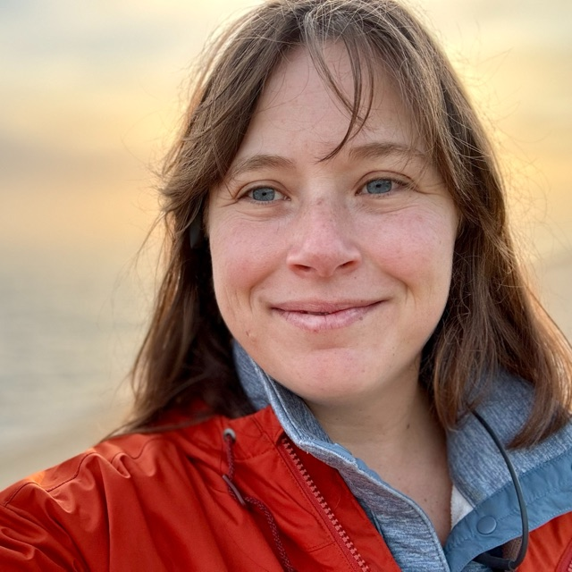

I help nonprofits and the teams behind their programs turn what they're trying to do into clear, shared, and measurable goals — so the whole team is aligned, outcomes can be measured, and you can tell the story of the difference you make.
I have a PhD in Social Science Research from UCLA, where I also work as a research data analyst.
Currently building PolicyCoder, a searchable library of evaluation policies — join the waitlist ↗

I'm here to help you design and deliver an evaluation (or evaluation policy!) that gives you meaningful, actionable information.
My family immigrated to America in 1991 from Belarus. Nonprofits, social service agencies, foundations, and government programs made a real difference in my life. I've seen what these programs look like when they work well — and I know what's at stake when they don't.
Later, working inside the nonprofit sector myself, I partnered with an evaluator who helped me measure and clarify the impact I was trying to make. It streamlined my work and gave me focus — suddenly I could tell the story of what we were doing and show that it mattered. That clarity is what I strive to bring to every organization I work with.
I've been doing this since 2015, I hold a PhD in the field, and I've worked with dozens of clients. I'd love the opportunity to work with you.
Select evaluation reports from projects I've worked on that are publicly available.
A study of nearly 2,500 American Jewish teens conducted in partnership with Stanford and Jewish Federation of North America, examining wellbeing, stress, and sources of support.
Read the full report ↗Lead evaluator for the pilot year of the Bronfman Fellowship's Campus Commons program, assessing implementation and early outcomes.
Read the full report ↗Clients & Partners
Evaluation policies shape how organizations understand, plan, and use evaluation. They are essential for managing evaluations effectively at scale.
The Evaluation Policy Research Hub collects resources to help practitioners and scholars understand existing evaluation policies and write new ones.
Visit the Evaluation Policy Hub ↗Resources and guidance on evaluation policies for government agencies and programs.
Research on evaluation policies in philanthropic organizations and recommendations for writing new ones.
Scholarly publications on evaluation policy and emerging practices across sectors.
Now Building
An interactive tool that turns a 75+ library of evaluation policies into a searchable, comparable resource. Through PolicyCoder, practitioners can browse various evaluation policies and learn from them. Launching October 2026.
My academic research looks at how evaluation actually happens in practice: evaluation policy across the philanthropic sector, how US foundations spend on evaluation, and the federal evaluation market. I also write on evaluation theory, and earlier research looked closely at the experience of foster youth.
For a full list, visit my Google Scholar page.
Send me an email to schedule a free intro call — I'll share practical advice and we can figure out together how I can support your work.